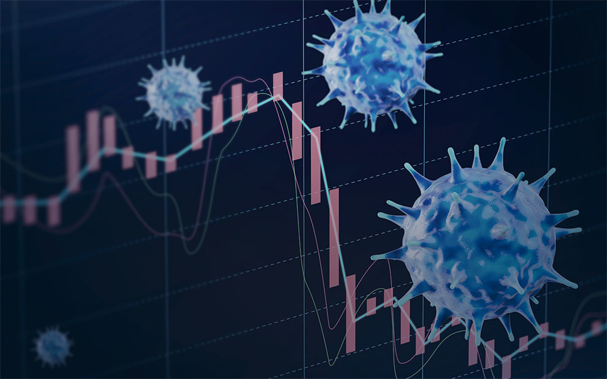
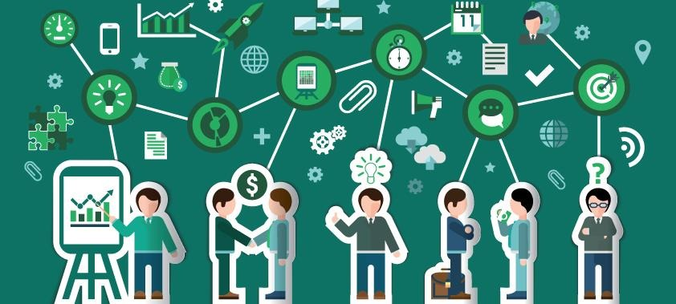
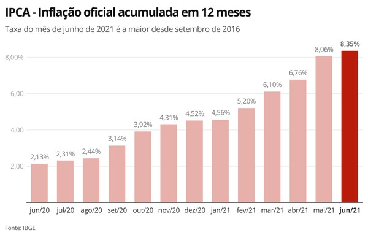

Os bancos se reinventarem, seus serviços começaram a ser virtuais, abriram aplicativos, pagamentos começaram a ser realizado virtualmente, como o pix. Esse período pandêmico também marcou o surgimento de bancos virtuais como o Nubank ou Inter.

A pandemia interferiu em todos os aspectos do mundo, educação, cultura, saúde e economia. As pessoas tiveram que se adaptar a um novo modo de viver e trabalhar. Aos que continuaram no trabalho, tiveram que aprender a usar o home office, e outros foram demitidos para corta gastos, esses tiveram que reorganizar a vida para sustentar-se, usando os auxílios criados, como o auxílio emergencial, ou se tornando microempreendedores.
Entre os micros empreendimentos, podem-se destacar os MEI’s (microempreendedores individuais), um modelo simplificado de empresa para quem trabalham por conta própria, alguns exemplos são cabeleireiros, manicures, artesãos, vendedores de doces e donos de minimercados. Em 2020, houve um acréscimo de mais de 1,4 milhões de MEI’s, entre eles, há um destaque para os jovens que procuram uma renda alternativa.
A pandemia também fez com a inflação aumenta-se quase 6% em 2021 se comparado a 2020. No Brasil é notório esse aumento, alguns produtos como leite, carne, feijão e gasolina tiveram um aumento considerável. A prova do aumento da inflação é que a nota de R$100 hoje vale o mesmo de R$13,91 em 1994.
Os bancos se reinventarem, seus serviços começaram a ser virtuais, abriram aplicativos, pagamentos começaram a ser realizado virtualmente, como o pix. Esse período pandêmico também marcou o surgimento de bancos virtuais como o Nubank ou Inter.